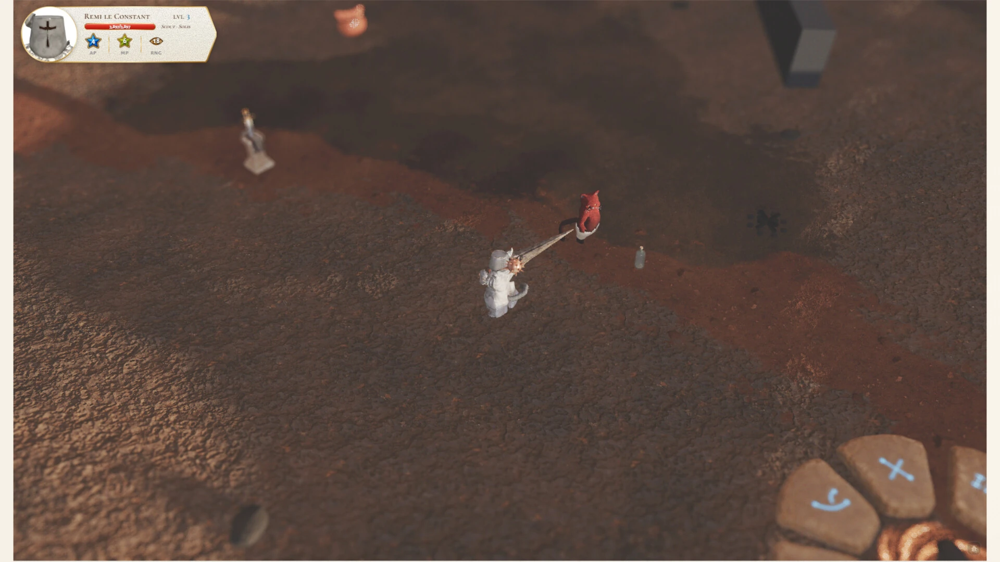
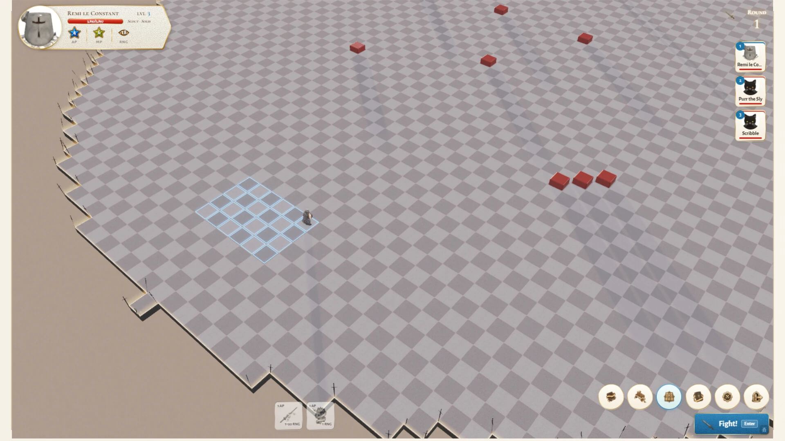
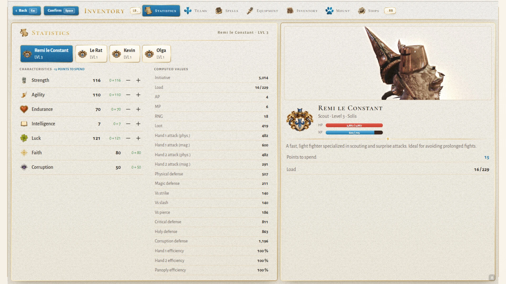
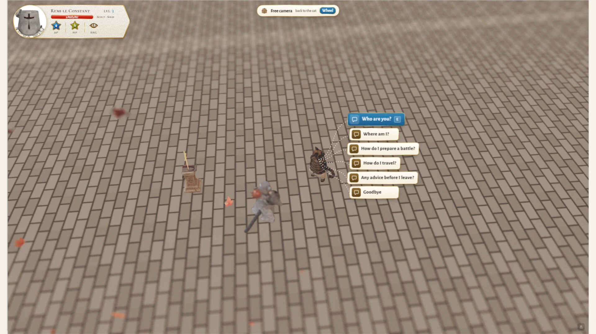

Création de jeux de table
FluffyCard
Un atelier pour concevoir des cartes, des decks et des plateaux. Il permet de préparer ses jeux de société et de les essayer en 2D ou en 3D.
Lightcroft · Jeux et logiciels
Un RPG tactique au tour par tour, dans un monde médiéval fantastique peuplé de chats. Je développe le jeu et les logiciels de création qui l’accompagnent.
Jeu en développement.

Créez vos combattants, formez une équipe et choisissez vos actions au tour par tour. Voici quelques captures de la version en développement.



Je construis aussi des outils pour créer, dessiner et développer mes projets.
Création de jeux de table
Un atelier pour concevoir des cartes, des decks et des plateaux. Il permet de préparer ses jeux de société et de les essayer en 2D ou en 3D.
Dessin et peinture
Un logiciel de dessin et de peinture numérique, pour travailler les illustrations et les éléments graphiques de ses projets.
Le moteur de développement
C’est le moteur que je développe pour Fluffy Fighters et mes logiciels. Il rassemble l’éditeur de scènes, le rendu 3D, le son et les outils de publication.
Le jeu et les logiciels évoluent ensemble, au fil de leur développement.
Une question sur le jeu ou les logiciels ? Vous pouvez m’écrire ou retrouver mes projets sur GitHub.